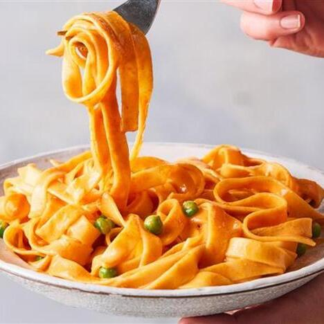

Gochujang Pasta

This vegan pasta dish is so easy to make but is deliciously spicy and comfortingly creamy. Feel free to swap the peas for shredded greens – or leave them out completely.
Serves 4 | Takes 30 mins
Original recipe: https://www.bbc.co.uk/food/recipes/creamy_gochujang_pasta_59347